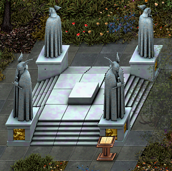

Black Swamp
- 1.
- 2.
- 3.
- 4.
- 5.
- 6.
- 7.
- 8.
- 9.
- 10.
- 11.
- 12.
- 13.
- 14.
- 15.
Krog Quest
Warrior of Krog
| Difficulty | Skills |
|---|---|
| Apprentice | Combat |
| NPC Quest Start | Monster | Reward |
|---|---|---|
| Targon | Many different creatures |
">


 ">
">

 ">
">
|
 Speak to Targon he will not speak to those not aligned with Krog. You must speak with the Krog Steward. He is located next to the spawn gate.
Speak to Targon he will not speak to those not aligned with Krog. You must speak with the Krog Steward. He is located next to the spawn gate.  He asks if you will join Krog and help protect the city. If you join Krog
you will be stronger with 1 extra orb of Strength. You will be able to reach 101. Once you make this choice you cannot change your mind. If you chose Krog you will be rewarded.
He asks if you will join Krog and help protect the city. If you join Krog
you will be stronger with 1 extra orb of Strength. You will be able to reach 101. Once you make this choice you cannot change your mind. If you chose Krog you will be rewarded.
- You have gained the strength of Krog
- You have gained 500 faction with the city of Krog
- 3,609 Experience Pool experience may very
QUEST RECEIVED: Warrior of Krog, Lord Targon of Krog asks you to slay x amount of Creatures.
Speak to Targon, he now calls you a loyal servant of Krog. He needs brave warriors willing to seek out and slay the foul creatures that plague us. He ask if you are willing to help. If you accept his request he will ask you to slay different amounts and types of creatues for him.
His rewards are experience points and Faction points. His quest are repeatable to gain more experiance and Faction points for the city. When slaying the creatures you will be updated QUEST UPDATE: Kill X more Creature for Lord Targon of Krog. When you have slain all of the creatures required
you will be updated.
QUEST RECEIVED: Warrior of Krog, Return to Lord Targon in Krog!
Targon praises you for you a job well done.
You have gained faction with Krog for your heroic work! See Lady Targon of Maraket about a reward.
- You have gained X amount of faction with the city of Krog
- Ramdon Amounts Experience Pool experience may very
 Follow the path south to Maraket and Speak to Lady Targon in the bank. She will greet you and reward you for you loyal patronage. Your reward are pieces of the Krog Armor. You will recieve a new pieces at diffent stages of your faction points.
Follow the path south to Maraket and Speak to Lady Targon in the bank. She will greet you and reward you for you loyal patronage. Your reward are pieces of the Krog Armor. You will recieve a new pieces at diffent stages of your faction points.
- 500 Faction Points Necklace of Krog
- 800 Faction Points Ring of Krog
- 1300 Faction Points Gloves of Krog
- 1800 Faction Points Belt of Krog
- 2300 Faction Points Helm of Krog
- 2800 Faction Points Boots of Krog
- 3300 Faction Points Cloak of Krog
- 3800 Faction Points Guardian of Krog
- 4300 Faction Points Leggings of Krog
- 4800 Faction Points Armor of Krog
Leonard is Lost
| Difficulty | Skills |
|---|---|
| Apprentice | Searching |
| NPC Quest Start | Reward |
|---|---|
| Oonga |

|
Speak to Oonga He is crying about someone or something named Leonard. Leonard is Oonga special friend. He is hiding from Oonga help him find Leonard.
He gives you a hint that Leonard is lazy and likes to take a nap in a barrel-thing.
QUEST RECEIVED: Leonard is Lost, You agreed to help Oonga of Krog find Leonard, a lost pet.
There are many barrels in the town to search. The barrel you are looking for is the one on the west side of the government hall.  When you search the barrel. A strong stench flows forth from the barrel as you per inside. At the bottome lies what looks like it may have been a squirrel at one time. You gently pick up the partially decayed remains,
brushing flies away with your other hand. Placeing the carcass into a small leather sack, you ponder how you will break the news to Oonga.
When you search the barrel. A strong stench flows forth from the barrel as you per inside. At the bottome lies what looks like it may have been a squirrel at one time. You gently pick up the partially decayed remains,
brushing flies away with your other hand. Placeing the carcass into a small leather sack, you ponder how you will break the news to Oonga.
QUEST UPDATE: Leonard is Lost, Return to Oonga with Leonard's remains.
He thanks you for finding Leonard and scoldes Leonard for being a bad pet.
- Gold Received: 350
- You have gained 250 faction with the city of Krog
- 660 Experience Pool experience may very
Reclaiming What's Mine
| Difficulty | Skills |
|---|---|
| Apprentice | Searching |
| NPC Quest Start | Reward |
|---|---|
| Ivogur |
">
|
 Speak to Ivogur He ask you to make sure all his supplies are still there. 5 crates of supplies. His memory is not so good, he can't remember where they are. He will give good reward.
Speak to Ivogur He ask you to make sure all his supplies are still there. 5 crates of supplies. His memory is not so good, he can't remember where they are. He will give good reward.
QUEST RECEIVED: Reclaiming What's mine, The ghost Ivogur who walks the streets of Krog asked you to locate 5 supply crates in his mine.
His mine is south east of Krog. Follow the path south just before you get to Maraket. Turn east and follow the south side of the mountain and you will come to his mine. See this map of the location  Once in side use this map to locate all the supplies. There are Cave Spiders (lvl ), Cave Slugs (lvl 11), and Bats (lvl 1) in this cave.
The cave is not to difficult to navigate. It can get dark in some places, but there are a few things that produce light in this cave. Bring a tourch if you think you need one, but you wont really need it. Head north west to supplie crate number 3 first.
When you find it you will be updated.
Once in side use this map to locate all the supplies. There are Cave Spiders (lvl ), Cave Slugs (lvl 11), and Bats (lvl 1) in this cave.
The cave is not to difficult to navigate. It can get dark in some places, but there are a few things that produce light in this cave. Bring a tourch if you think you need one, but you wont really need it. Head north west to supplie crate number 3 first.
When you find it you will be updated.
QUEST UPDATE: You have located a Supply Crate for Ivogur.
Go back to the entrance of the cave and head south west go for crate number 5 next then to number 4. Number 4 has a trap door next to it you will need to enter to beable to get to crates 1 and 2. Once you go down the trap door you can chose to go north for number 2 or go east for number 1.
It won't matter you will have to backtrack to get each one anyway. Once you find them both you will be updated to return to Ivogur in Krog.
QUEST UPDATE: Reclaiming What's Mine, Return to Ivogur in Krog.
Ivogur is waiting for news of his supplies. He is greatful for the good news they are still there. Take this gold for reward and more in crate.
- Gold Received: 1500
- You have gained 200 faction with the city of Krog
- 39,600 Experience Pool experience may very
Head south between the moutain and the building closest to the moutain, there will be Ivogur's Crate. Check it and you are rewarded.
- Hard Leather Cap
Your help has allowed Ivogur to enter his rest.
Formidable Formicidae
| Difficulty | Skills |
|---|---|
| Apprentice | Combat |
| NPC Quest Start | Monster | Reward |
|---|---|---|
| Oonga | Fire Ant (lvl 8) |

|
 Speak to Haburt he has a problem and he says you owe hime for since you scared him. There is a fire ant colony south of Krog that is growning out of control.
He can't miss one day or he is in for it. He wants a teensy break. He ask if you can help squash them to give him a break.
Speak to Haburt he has a problem and he says you owe hime for since you scared him. There is a fire ant colony south of Krog that is growning out of control.
He can't miss one day or he is in for it. He wants a teensy break. He ask if you can help squash them to give him a break.
QUEST RECEIVED: Formidable Formicidae, Head south of Krog and kill 40 Fire Ants for Haburt.
Check this map for the location of the Fire Ant colony.  Be careful not to get swarmed by the fire ants.
Be careful not to get swarmed by the fire ants.  They can easily overwhelm you if your not careful. Watch out for the one spawn of the Large Fire Ant.
They can easily overwhelm you if your not careful. Watch out for the one spawn of the Large Fire Ant. Kill 40 you will be updated along the way to let you konw how many you have killed.
QUEST UPDATE: You have killed 40 Fire Ants for Haburt
QUEST UPDATE: Formidable Formicidae, You have killed 40 Fire Ants for Haburt. Return to him in Krog.
When you return to Haburt he has a big surprise for you. He says you are now friends. He gives you some bracers made from ant legs.
- Ant Leg Bracer
- 700 Gold
- You have gained 500 faction with the city of Krog!
- 39,600 Experience Pool experience may very
Protect Krog!
| Difficulty | Skills |
|---|---|
| Apprentice | Combat |
| NPC Quest Start | Reward |
|---|---|
| Warrog |
|
 Speak to Warrog ask if you would take up arms against evil and strike a blow for the great Orc city of Krog! Evil creatures attack people as they travel to and from the city. Many younglings have perished merely by travelling though the nearby plains and hills.
He wants you to seek out and kill a Kobold, a Snake, and a Bat.
Speak to Warrog ask if you would take up arms against evil and strike a blow for the great Orc city of Krog! Evil creatures attack people as they travel to and from the city. Many younglings have perished merely by travelling though the nearby plains and hills.
He wants you to seek out and kill a Kobold, a Snake, and a Bat.
QUEST RECEIVED: Protect Krog!, Show your prowess to Warrog a priest in Krog! Hunt a Kobold, Snake, and Bat.
You shall find Kobolds  to the south, and Snakes and Bats
roam freely across the plains.When you kill one of the creatures you will recieve an update.
to the south, and Snakes and Bats
roam freely across the plains.When you kill one of the creatures you will recieve an update.
QUEST UPDATE: You have slain a Snake for Krog!
QUEST UPDATE: You have slain a Bat for Krog!
QUEST UPDATE: You have slain a Kobold for Krog!
When all three have been slan you will recieve the final update to return to Warrog to recieve your reward.
QUEST UPDATE: Protect Krog!, You have completed Warrog's Quest! Return to the Temple of Ulthien.
What have you killed so far... You have killed a kobold! You have killed a snake! You have killed a bat! You have proven yourself for Krog! If you have need of my services, you know
where to find me! As alwasy, may Ulthien bless and guide you.
- You have gained 200 faction with the city of Krog
- 6,600 Experience Pool experience may very
You were blessed by Warrog for protecting Krog. Return to Warrog for healing when needed.
The Art of Combat
| Difficulty | Skills |
|---|---|
| Apprentice | Combat |
| NPC Quest Start | Reward |
|---|---|
| Bograhk Dargarkh | "> |
 Speak to Bograhk Dargarkh he will task you to speak to the 6 orc trainers all over Orc lands.
Speak to Bograhk Dargarkh he will task you to speak to the 6 orc trainers all over Orc lands.
- Large Blades in Krog Orzgath Mugzluk
- Axes in Krog Tyugh Bruurshk
- Blunt Weapons in Maraket Ulver Muurnahknahk
- Polearms in Maraket Umduhk Dumdumuhk
- Unarmed Combat in Samad Ox Juurnuhk
- Small Blades in Samad Gar-Gar Mootarhk
QUEST RECEIVED: The Art of Combat, Bograhk Dargarkh of Krog invited you to seek out and train with 6 Orc Combat Trainers.
When you have completed all the combat trainers task speak to Bograhk Dargarkh He will reward you with the Orcish Warrior Plate.
- Orcish Warrior Plate
- 35,640 Experience Pool experience may very
Bograhk rewarded your hard work with Orcish Warrior Plate armor!
Honor In Battle
| Difficulty | Skills |
|---|---|
| Apprentice | Combat lvl 15 large Blades |
| NPC Quest Start | Monsters | Reward |
|---|---|---|
| Orzgath Mugzluk | Krog Rat (11) | "> "> |
 Speak to Orzgath Mugzluk, he will only speak to you if you have 15 in your large blades skill. If you are lvl 15 in your large blades skill he will teach you the way of a large blades user.
He will task you to slice 40 Krog Rats with the Crude Orcish Sword.
Speak to Orzgath Mugzluk, he will only speak to you if you have 15 in your large blades skill. If you are lvl 15 in your large blades skill he will teach you the way of a large blades user.
He will task you to slice 40 Krog Rats with the Crude Orcish Sword.
- Crude Orcish Sword
QUEST RECEIVED: Honor in Battle, Slice 40 Krog Rats in two for Orzgath Mugzluk of Krog with the Crude Orcish Sword.
Head southeast of Krog and you will find some Krog Rats.
 As you slay the Krog Rats you will be updated You have slashed X Krog Rats for Orgath Mugzluk!!
If you kill one with out the Crude Orcish Sword you will be updated with a warning, You must kill Krog Rats with the Crude Orcish Sword to complete Orzgath's training. Once you have killed 40 you will be updated.
As you slay the Krog Rats you will be updated You have slashed X Krog Rats for Orgath Mugzluk!!
If you kill one with out the Crude Orcish Sword you will be updated with a warning, You must kill Krog Rats with the Crude Orcish Sword to complete Orzgath's training. Once you have killed 40 you will be updated.
QUEST UPDATE: Honor in Battle, Return to Orzgath Mugzluk in Krog to complete your training. Speak to Orzgath Mugzluk he will reward you with the Orcish Warrior Belt.
- Orcish Warrior Belt
- 19,800 Experience Pool experience may very
You received training in the art of Sword combat from Orzgath Mugzluk.
Keep it Sharp
| Difficulty | Skills |
|---|---|
| Apprentice | Combat lvl 15 Axes |
| NPC Quest Start | Monsters | Reward |
|---|---|---|
| Tyugh Bruurshk | Orc Renegade Mage (25) | "> "> |
Speak to Tyugh Bruurshk, he will only speak to you if you have 15 in your axe skill. If you are lvl 15 in your axes skill he will teach you the way of an axe user. He will task you to hack apart 50 Orc Renegade Mages with the Crude Orcish Battle Axe.
- Crude Orcish Battle Axe
QUEST RECEIVED: Keep it Sharp, Hack apart 50 Orc Renegade Mages with the Crude Orcish Battle Axe for Tyugh Bruurshk of Krog.
Head east though the mountain pass to the shore then head north, you will find Orc Renegades and Orc Renegade Mages. Check this map of the locaion. As you hack apart Orc Renegade Mages you will be updated You have hacked X Orc Renegade Mages for Tyugh Bruurshk! If you kill one with out the Crude Orcish Battle Axe you will be updated with a warning, You must equip the Crude Orcish Battle Axe to complete Tyugh's training. Once you have killed 50 you will be updated.
QUEST UPDATE: Keep it Sharp, Return to Tyugh Bruurshk in Krog to complete your training. Speak to Tyugh Bruurshk he will reward you with the Orcish Warrior Gauntlets.
- Orcish Warrior Gauntlets
- 26,400 Experience Pool experience may very
You have received training in the art of axe combat from Tyugh Bruurshk.
Crush Skulls
| Difficulty | Skills |
|---|---|
| Apprentice | Combat lvl 15 Blunt Weapons |
| NPC Quest Start | Monsters | Reward |
|---|---|---|
| Ulver Muurnahknahk | Orc Renegade (11) | "> "> |
Speak to Ulver Muurnahknahk, he will only speak to you if you have 15 in your blunt weapons skill. If you are lvl 15 in your blunt weapons skill he will teach you the way of a blunt weapon user. He will task you to smash 100 Orc Renegades with the Crude Orcish Skullcrusher.
- Crude Orcish Skullcrusher
QUEST RECEIVED: Crush Skulls, Smash 100 Orc Renegades with the Crude Orcish Skullcrusher for Ulver Muurnahknahk of Maraket.
Head east to the shore then head north, you will find Orc Renegades and Orc Renegade Mages. Check this map of the locaion. As you smash Orc Renegades
 you will be updated You have smashed X Orc Renegades for Ulver Muurnahknahk!
If you kill one with out the Crude Orcish Skullcrusher you will be updated with a warning, You must equip the Crude Orcish Skullcrusher to complete Ulver's training. Once you have killed 100 you will be updated.
you will be updated You have smashed X Orc Renegades for Ulver Muurnahknahk!
If you kill one with out the Crude Orcish Skullcrusher you will be updated with a warning, You must equip the Crude Orcish Skullcrusher to complete Ulver's training. Once you have killed 100 you will be updated.
QUEST UPDATE: Crush Skulls , Return to Ulver Muurnahknahk in Maraket to complete your training. Speak to Ulver Muurnahknahk he will reward you with the Orcish Warrior Helm.
- Orcish Warrior Helm
- 30,360 Experience Pool experience may very
You have received training in the art of blunt weapns combat.
Stay Back
| Difficulty | Skills |
|---|---|
| Apprentice | Combat lvl 15 Polearms |
| NPC Quest Start | Monsters | Reward |
|---|---|---|
| Umduhk Dumdumuhk | Ghost (23) |


|
 Speak to Umduhk Dumdumuhk, he will only speak to you if you have 15 in your polearms skill. If you are lvl 15 in your polearms skill he will teach you the way of a polearms user.
He will task you to kill 50 ghost with the Crude Orcish Spear.
Speak to Umduhk Dumdumuhk, he will only speak to you if you have 15 in your polearms skill. If you are lvl 15 in your polearms skill he will teach you the way of a polearms user.
He will task you to kill 50 ghost with the Crude Orcish Spear.
- Crude Orcish Spear
QUEST RECEIVED: Stay Back, Defeat 50 Ghost for Umduhk Dumdumuhk of Maraket with the Crude Orcish Spear.
There is not a very good spawn of ghost in the Black Swamp area. The best place that is good for a low level player is Silvest area. Travel to the Lotor's Summer Palace Portal (LSP).  When at LSP look for the Silvest Portal and enter. You be walking all the way to the Eastern side of the island. There is a town call East Watch you will come to when you get their. Now south of east watch is the Valley of the Dead, this is were you will find lots of Ghost. Check this map of the locaion.
 As you defeat Ghost
As you defeat Ghost  you will be updated You have killed X Ghost for Umduhk Dumdumuhk!
If you kill one with out the Crude Orcish Spear you will be updated with a warning, You must equip the Crude Orcish Spear to complete Umduhk's training. Once you have killed 50 you will be updated.
you will be updated You have killed X Ghost for Umduhk Dumdumuhk!
If you kill one with out the Crude Orcish Spear you will be updated with a warning, You must equip the Crude Orcish Spear to complete Umduhk's training. Once you have killed 50 you will be updated.
QUEST UPDATE: Stay Back, Return to Umduhk Dumdumuhk in Maraket to collect your reward. Speak to Umduhk Dumdumuhk he will reward you with the Orcish Warrior Cape.
- Orcish Warrior Cape
- 26,400 Experience Pool experience may very
You have received training in the art of polearm combatr from Umdumuhk.
Never Stop
| Difficulty | Skills |
|---|---|
| Apprentice | Combat lvl 15 Unarmed Combat |
| NPC Quest Start | Monsters | Reward |
|---|---|---|
| Ox Juurnuhk | Goblin Warriors (19) |
">

|
 Speak to Ox Juurnuhk, he will only speak to you if you have 15 in your Unarmed Combat skill. If you are lvl 15 in your Unarmed Combat skill he will teach you the way of an Unarmed Combat user.
He will task you to kill 100 Goblin Warriors with the Crude Orcish Punching Daggers.
Speak to Ox Juurnuhk, he will only speak to you if you have 15 in your Unarmed Combat skill. If you are lvl 15 in your Unarmed Combat skill he will teach you the way of an Unarmed Combat user.
He will task you to kill 100 Goblin Warriors with the Crude Orcish Punching Daggers.
- Crude Orcish Punching Daggers
QUEST RECEIVED: Never Stop, Ox Juurnuhk of Samad assigned you to pummel 100 Goblin Warriors with the Crude Orcish Punching Daggers.
The best place to fight Goblin Warriors is around Goblin lake.
 Head east out of Samad following the road southeast to the spawn gate.
Go south from the spawn gate and you will be at Goblin Lake.
As you defeat Goblin Warriors you will be updated You have killed X Goblin Warriors for Ox Juurnuhk!
If you kill one with out the Crude Orcish Punching Daggers you will be updated with a warning, You must equip the Crude Orcish Punching Daggers to complete Ox's training. Once you have killed 100 you will be updated.
Head east out of Samad following the road southeast to the spawn gate.
Go south from the spawn gate and you will be at Goblin Lake.
As you defeat Goblin Warriors you will be updated You have killed X Goblin Warriors for Ox Juurnuhk!
If you kill one with out the Crude Orcish Punching Daggers you will be updated with a warning, You must equip the Crude Orcish Punching Daggers to complete Ox's training. Once you have killed 100 you will be updated.
QUEST UPDATE: Never Stop, Return to Ox Juurnuhk in Samad to collect your reward. Speak to Ox Juurnuhk he will reward you with the Orcish Warrior Greaves.
- Orcish Warrior Greaves
- 85,800 Experience Pool experience may very
You have received training in the art of Unarmed Combat from Juurnuhk.
Stick Jab Twist
| Difficulty | Skills |
|---|---|
| Apprentice | Combat lvl 15 Small Blades |
| NPC Quest Start | Monsters | Reward |
|---|---|---|
| Gar-Gar Mootarhk | Goblin (16) |
 ">
">
|
Speak to Gar-Gar Mootarhk, he will only speak to you if you have 15 in your Small Blades skill. If you are lvl 15 in your Small Blades skill he will teach you the way of a Small Blades user. He will task you to kill 50 Goblins with the Crude Orcish Dagger.
- Crude Orcish Daggers
QUEST RECEIVED: Stick Jab Twist, Stick 50 Goblins for Gar-Gar Mootarhk of Samad with the Crude Orcish Dagger.
The best place to fight Goblin Warriors is around Goblin lake.
Head east out of Samad following the road southeast to the spawn gate.
Go south from the spawn gate and you will be at Goblin Lake.
As you defeat Goblins  you will be updated You have killed X Goblins for Gar-Gar Mootarhk!
If you kill one with out the Crude Orcish Dagger you will be updated with a warning, You must equip the Crude Orcish Dagger to complete Gar-Gar's training. Once you have killed 50 you will be updated.
you will be updated You have killed X Goblins for Gar-Gar Mootarhk!
If you kill one with out the Crude Orcish Dagger you will be updated with a warning, You must equip the Crude Orcish Dagger to complete Gar-Gar's training. Once you have killed 50 you will be updated.
QUEST UPDATE: Stick Jab Twist, Return to Gar-Gar Mootarhk in Samad to collect your reward. Speak to Gar-Gar Mootarhk he will reward you with the Orcish Warrior Boots.
- Orcish Warrior Boots
- 26,400 Experience Pool experience may very
You have received training in the art of Small Blades combat from Mootarhk.